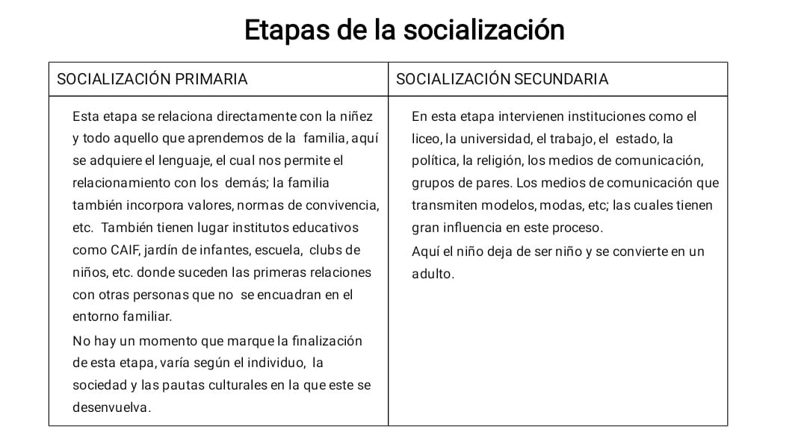

HISTORIAS
1- En 1939 una niña de seis años, llamada Anna, fue encontrada en el desván de la casa de su abuelo, dónde había sido ocultada, por ser hija legítima, desde los cinco meses y medio. Su madre, que era deficiente mental, le había dedicado poco tiempo, porque se ocupaba de tareas de la granja, y la alimentaba, casi exclusivamente con leche de vaca. Cuando fue descubierta, no sabía hablar, ni caminar, ni alimentarse por sí misma. Se encontraba desnutrida y se mantenía inmóvil, apática y, en general, indiferente a todo. Se creyó que era sorda y probablemente ciega. Anna fue internada en una institución donde aprendió a caminar, a comer y a entender órdenes sencillas. En 1942, cuando murió de ictericia, había llegado a hablar usando frases sueltas y trataba de sostener una conversación, era aseada, e intentaba ayudar a los demás niños.
2- En la misma época fue encontrada otra niña, Isabel, de seis años y medio, también ilegítima y en condiciones de extremo aislamiento. A diferencia de Anna, Isabel pasaba la mayor parte del tiempo con su madre sordomuda, en una habitación a oscuras. A causa de esto, la niña no desarrolló el lenguaje y se comunicaba con su madre a través de gestos. Estaba tan raquítica que apenas podía mantenerse en pie y caminaba a sacudidas. Su conducta hacia los extraños era sumamente hostil. Los especialistas pensaron que era débil mental y que era totalmente ineducable. Sin embargo, Isabel fue sometida a una a una enseñanza especial e intensiva. En dos años llegó a cubrir las etapas de aprendizaje que por lo general exigen seis, en un año y medio triplicó su coeficiente intelectual. A los catorce años estaba en sexto año de una escuela pública y hacía una vida normal.
Concepto de Socialización:
Proceso por el cual un individuo adquiere todos los conocimientos y las habilidades necesarias para convertirse en un integrante más de la sociedad en la que pertenece.
Es el proceso a través del cual el individuo incorpora la cultura de la sociedad en la que vive.
Es un proceso que dura toda la vida del individuo.
Cuadro etapas de socialización

TUTORIAL DE LA UNIDAD 1: